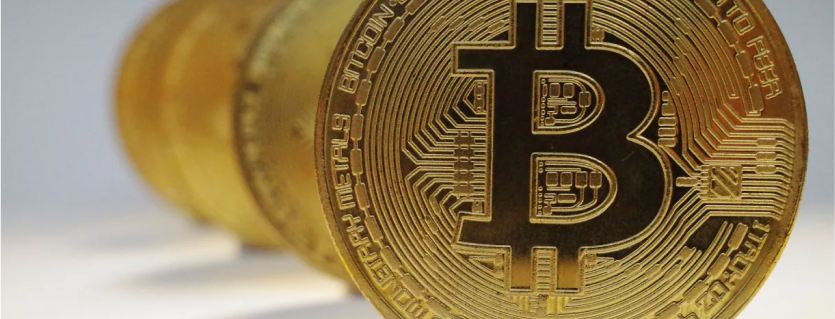
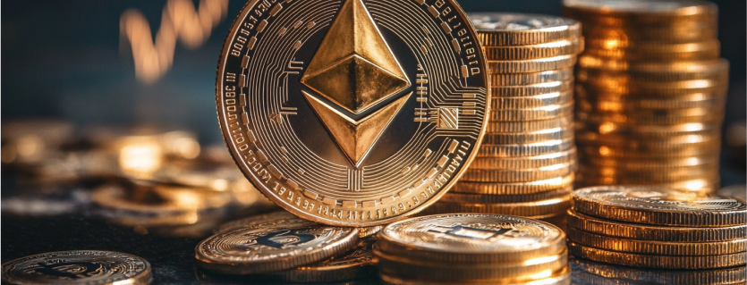
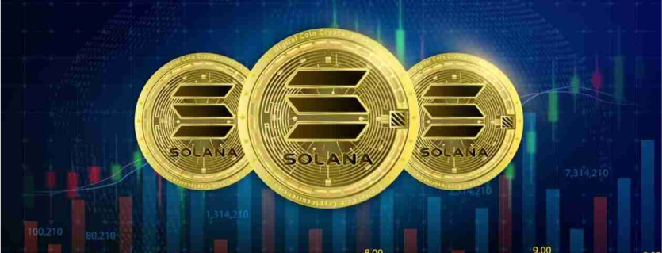

SmartCoin

SmartCoin
12 hours ago By Gustavo Jaccoud | 15min read
As criptomoedas surgiram como uma inovação disruptiva no cenário financeiro global, desafiando as formas tradicionais de moeda e transferência de valor. Desde a criação do Bitcoin em 2009, por Satoshi Nakamoto, a ideia de um sistema descentralizado, seguro e transparente ganhou força, cativando tanto entusiastas quanto investidores.
Ao longo dos anos, a popularidade das criptomoedas cresceu exponencialmente, impulsionada pela promessa de retornos elevados e pela independência das instituições financeiras convencionais. No entanto, essa mesma popularidade trouxe consigo um nível significativo de especulação. Flutuações drásticas nos valores das criptomoedas tornaram-se comuns, refletindo tanto o entusiasmo quanto a incerteza dos mercados.
A história das criptomoedas é marcada por altos e baixos, desde o aumento meteórico do Bitcoin até o surgimento de milhares de altcoins e a expansão da tecnologia blockchain para além das finanças, englobando setores como logística, saúde e entretenimento.
O futuro das criptomoedas é um terreno fértil para especulações. Alguns acreditam que elas se tornarão uma parte integrante do sistema financeiro global, enquanto outros as veem como uma bolha prestes a estourar. Independentemente do futuro, as criptomoedas já deixaram uma marca indelével na economia mundial, e sua história continua a ser escrita à medida que novos desenvolvimentos surgem.

O Bitcoin, criado por Satoshi Nakamoto, cujo verdadeiro nome e identidade permanecem desconhecidos, foi lançado em 2009 como a primeira criptomoeda do mundo. Desde então, tornou-se a referência de valor no mundo das criptomoedas, muitas vezes chamado de "ouro digital". O Bitcoin foi projetado para ser uma moeda descentralizada, operando em uma rede peer-to-peer sem a necessidade de intermediários, como bancos ou governos. Uma das principais vantagens do Bitcoin é sua oferta limitada a 21 milhões de unidades, o que o torna um ativo deflacionário em contraste com moedas fiduciárias, que podem ser impressas indefinidamente.
O Bitcoin é considerado a criptomoeda mais segura, graças à sua ampla rede de mineradores e ao uso de um algoritmo de consenso chamado Proof of Work (PoW), que protege a rede contra ataques maliciosos. No futuro, espera-se que o Bitcoin continue a ser um ativo de reserva de valor, especialmente em períodos de instabilidade econômica global. Além disso, com a crescente adoção institucional e a possibilidade de ser aceito como moeda legal em mais países, o Bitcoin pode solidificar ainda mais sua posição como a principal criptomoeda do mundo (Blockpit) (Brave New Coin).

Lançado em 2015 por Vitalik Buterin, o Ethereum revolucionou o mundo das criptomoedas ao introduzir a capacidade de criar contratos inteligentes e aplicativos descentralizados (dApps). Ao contrário do Bitcoin, que foi projetado principalmente como uma reserva de valor e meio de troca, o Ethereum foi criado como uma plataforma de desenvolvimento que permite a criação de software descentralizado em sua blockchain. A principal vantagem do Ethereum é sua versatilidade; ele não é apenas uma criptomoeda, mas também uma plataforma de inovação que possibilita uma ampla gama de aplicações, desde finanças descentralizadas (DeFi) até tokens não fungíveis (NFTs).
O Ethereum tem passado por uma importante atualização, conhecida como Ethereum 2.0, que visa melhorar sua escalabilidade, segurança e sustentabilidade, migrando de um modelo de Proof of Work (PoW) para Proof of Stake (PoS). Essa transição é esperada para resolver problemas de congestionamento na rede e reduzir o consumo de energia, tornando o Ethereum mais eficiente. No futuro, o Ethereum provavelmente continuará a ser a principal plataforma para dApps e contratos inteligentes, com potencial para impulsionar ainda mais a adoção da tecnologia blockchain em diversas indústrias (Blockpit).
O Binance Coin (BNB) foi lançado em 2017 pela Binance, a maior exchange de criptomoedas do mundo, sob a liderança de Changpeng Zhao, mais conhecido como CZ. Originalmente criado como um token para pagar taxas na plataforma Binance com desconto, o BNB evoluiu para se tornar um dos principais tokens do ecossistema cripto, com uma variedade de casos de uso, incluindo o pagamento de taxas de transação na Binance Smart Chain, participação em vendas de tokens e até mesmo reservas de viagens.
Uma das principais vantagens do BNB é a sua integração profunda com o ecossistema da Binance, que continua a se expandir em novos serviços e produtos, fortalecendo a utilidade do BNB. Além disso, a Binance realiza queimas periódicas de BNB, o que reduz a oferta total do token e, teoricamente, aumenta seu valor ao longo do tempo. No futuro, espera-se que o BNB continue a crescer em importância à medida que a Binance introduz novas funcionalidades e expande sua presença global, apesar dos desafios regulatórios que a exchange enfrenta em várias jurisdições (Blockpit) (Brave New Coin).

Solana, lançada em 2020 por Anatoly Yakovenko, é uma blockchain de alta performance que busca resolver o trilema da blockchain, que consiste em alcançar simultaneamente descentralização, segurança e escalabilidade. Solana é conhecida por sua capacidade de processar milhares de transações por segundo com custos extremamente baixos, o que a torna uma das blockchains mais rápidas e eficientes do mercado. Sua arquitetura única, que utiliza um novo mecanismo de consenso chamado Proof of History (PoH), permite que as transações sejam processadas em paralelo, aumentando significativamente a velocidade da rede.
A principal vantagem da Solana é sua escalabilidade, o que a torna ideal para aplicações intensivas, como dApps e NFTs, que exigem alta capacidade de processamento. No futuro, Solana é vista como uma das maiores concorrentes do Ethereum, com potencial para atrair desenvolvedores e projetos que buscam uma alternativa mais rápida e barata. Com uma comunidade em crescimento e parcerias estratégicas, Solana tem o potencial de se tornar uma das principais plataformas de blockchain nos próximos anos (CoinDCX) (Brave New Coin).